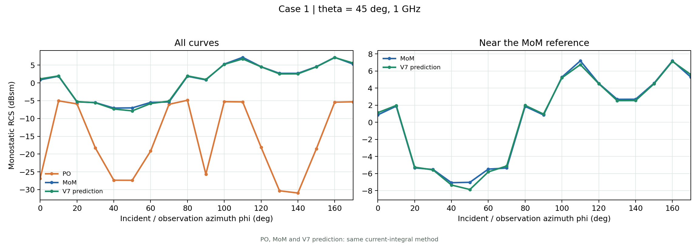
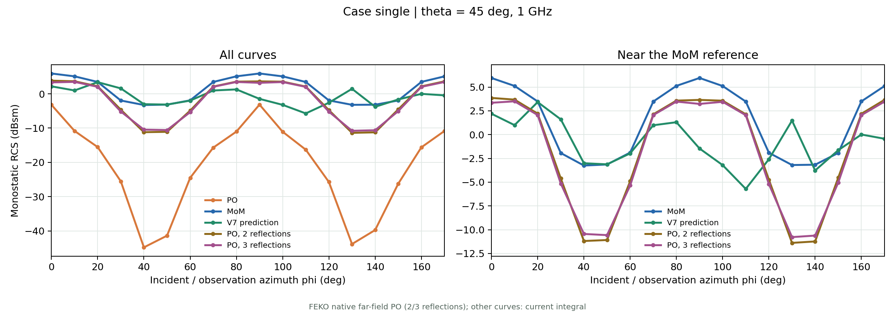

Weekly Journal
日期：2026/11/10
1. 统一电流归一化
过去每个样本用自身 PO 电流的平均幅值确定缩放系数。记三角元的 PO、MoM 复电流为 $J_{\mathrm{PO}}$、$J_{\mathrm{MoM}}$，将实部和虚部按三个笛卡尔分量展开为 6 维向量，则旧方案为
现改为全样本共用自由空间波阻抗 $\eta_0=376.730313668\ \Omega$：
几何、边、聚类和入射角数据不变；这次只改变电流的数值尺度。因此旧、新数据集上的 MSE loss 不能直接横向比较，物理电流的相对误差可以按同一口径比较。
2. 入射支路
V7 在每个 G0 三角元构造 14 维入射特征：传播方向 $\hat{k}$ 的 3 维、$\hat{k}\otimes n_i$ 的 9 维，以及 $\cos(k_0\hat{k}\cdot c_i)$、$\sin(k_0\hat{k}\cdot c_i)$ 的 2 维。其中 $c_i$ 为中心、$n_i$ 为法向。特征经 14 -> 128 -> 128 -> 512 的 ReLU MLP，拆成两个 256 维调制量 $\gamma_{\rm src},\beta_{\rm src}$。PO 电流编码得到 $h_i\in\mathbb R^{256}$ 后，执行
这里 $\odot$ 是逐元素相乘（$(a_x,a_y,a_z)\odot(b_x,b_y,b_z)=(a_xb_x,a_xb_y,a_xb_z, a_yb_x,a_yb_y,a_yb_z, a_zb_x,a_zb_y,a_zb_z)$）；它让入射方向、表面朝向和相位在进入局部信息交流前作用于 PO 特征。最后一层零初始化，使训练起点不受新支路扰动。
3. 几何支路
每个 G0 节点的 10 维输入为：中心坐标 3 维、法向 3 维、面积 1 维、G0 邻域及所属 G1/G2 簇邻域的法向变化各 1 维。邻域变化用 $1-n_i\cdot n_j$ 在几何边上取平均；G1/G2 的统计值再广播回各自的 G0 子节点。此设计使节点获得局部及较粗尺度的几何转折信息。
几何输入经 10 -> 128 -> 128 -> 512 的 ReLU MLP，也拆成 $\gamma_{\rm geo},\beta_{\rm geo}\in\mathbb R^{256}$，在入射支路之后执行
几何支路同样采用零初始化输出层。两条支路仅在主干入口各注入一次，不在每轮 MGTransformer 中重复注入。
4. 建立几何缓存层
V7 新增不含可学习参数的 Geo_cache，在每个样本的单次前向传播内先计算与当前网络特征无关的几何量，再供重复的 MGTransformer 和局部交流使用：
- G0 几何边的双向索引、中心位移 $\rho_{ij}$、距离 $R_{ij}$ 和目标节点的邻居数。
- G1/G2 簇的面积总和、面积加权中心与法向，以及两层耦合边的双向索引。
- G1/G2 耦合边上的复标量 Green 核 $G_{ij}=e^{-jk_0R_{ij}}/(4\pi R_{ij})$，拆为实部、虚部供注意力偏置使用；另按 $\nabla G_{ij}=G_{ij}(-jk_0-1/R_{ij})\hat r_{ij}$ 形成 6 维实/虚梯度量，供 CoupleExchange 使用。
这样固定的距离、核函数和簇几何不必在 MG_num=4 的每轮主干调用中重复求值。缓存不是跨样本或跨 epoch 持久保存，而是一次前向计算、同次前向复用。
5. 五个 Case 的 V6/V7 重训
序号 9：旧归一化、旧网络 V6。序号 11：统一 $\eta_0$ 归一化、旧网络 V6。序号 12：相同 $\eta_0$ 数据集、新网络 V7（入射与几何支路）。三次均为 MG_num=4，使用各自最佳 checkpoint。每格为 train / val，越小越好。
归一化 MSE loss（序号 9 与 11/12 的尺度不同，不能直接比较）：
| 序号 | Case 1 | Case 2 | Case 3 | Case 4 | Case 5 | 平均 |
|---|---|---|---|---|---|---|
| 9 · V6，旧归一化 | 0.04625 / 0.13624 | 0.05960 / 0.17331 | 0.03895 / 0.10315 | 0.06664 / 0.19737 | 0.04865 / 0.13852 | 0.05202 / 0.14972 |
| 11 · V6，eta | 0.02904 / 0.06076 | 0.03310 / 0.06604 | 0.02513 / 0.05117 | 0.03216 / 0.07282 | 0.02704 / 0.05606 | 0.02929 / 0.06137 |
| 12 · V7，eta | 0.00545 / 0.02793 | 0.00706 / 0.03033 | 0.00469 / 0.02227 | 0.00725 / 0.04957 | 0.00583 / 0.03307 | 0.00605 / 0.03264 |
复电流相对误差，$\|\hat J-J_{\rm MoM}\|_F/\|J_{\rm MoM}\|_F\times100\%$；每角度先算误差，再按 case 等权平均：
| 序号 | Case 1 | Case 2 | Case 3 | Case 4 | Case 5 | 平均 |
|---|---|---|---|---|---|---|
| PO 基线 | 74.77 / 75.11 | 78.89 / 78.93 | 78.09 / 77.40 | 78.15 / 78.06 | 71.36 / 71.28 | 76.25 / 76.16 |
| 9 · V6，旧归一化 | 23.73 / 38.76 | 24.98 / 41.76 | 21.07 / 34.43 | 25.31 / 42.95 | 25.32 / 41.80 | 24.08 / 39.94 |
| 11 · V6，eta | 27.59 / 39.08 | 28.78 / 40.55 | 24.86 / 35.64 | 30.25 / 45.37 | 28.62 / 41.23 | 28.02 / 40.38 |
| 12 · V7，eta | 11.94 / 25.50 | 13.23 / 27.48 | 10.74 / 23.23 | 14.37 / 37.18 | 13.26 / 31.60 | 12.71 / 29.00 |
序号 12 的五个 case 均有改善：平均验证相对误差从序号 11 的 40.38% 降至 29.00%，较旧归一化 V6 的 39.94% 也低 10.94 个百分点。这个结果表明 V7 整体方案有效。
6. 单站 RCS 指标
新增 $\theta=45^\circ$、$\phi=0^\circ,10^\circ,\ldots,170^\circ$ 的单站 RCS 曲线，以 MoM 为参照检查预测远场。Case 1 的 18 角度 dBsm RMSE：单次 PO 19.08 dB，V7 预测 0.28 dB。完全未参与训练的 case_single 上，单次 PO 为 24.82 dB，V7 预测为 4.34 dB；FEKO 二、三次反射 PO 分别约为 4.18 dB、4.05 dB。因此新几何上的 V7 预测明显优于单次 PO，但与多次反射 PO 大体接近、略逊于后者。
Case 1：单次 PO、MoM 与 V7 预测。

Case single：单次 PO、二/三次反射 PO、MoM 与 V7 预测。

图中 PO、MoM、预测曲线由同一套三角元复电流积分计算；case_single 的二、三次反射 PO 曲线是 FEKO 直接导出的远场。后两者与电流积分曲线的 RMSE 只用于观察趋势，严格定量比较还需统一远场计算口径。单站结果也不能单独替代电流和其他观察角的评价。
7. 直接关闭通路的消融
固定序号 12 已训练的 V7 权重，不重新训练，只在前向时分别关闭入射、几何、G1/G2 BiasTransformer 或 CoupleExchange。表中是复电流相对误差百分比，仍按 train / val 展示。
| 序号 | 关闭的内容 | Case 1 | Case 2 | Case 3 | Case 4 | Case 5 | 平均 |
|---|---|---|---|---|---|---|---|
| 12 | 无 | 11.94 / 25.50 | 13.23 / 27.48 | 10.74 / 23.23 | 14.37 / 37.18 | 13.26 / 31.60 | 12.71 / 29.00 |
| 13 | 几何支路 | 72.63 / 73.12 | 75.15 / 74.95 | 71.79 / 71.72 | 86.79 / 87.69 | 73.95 / 72.94 | 76.06 / 76.08 |
| 14 | 入射支路 | 61.58 / 63.71 | 61.75 / 62.71 | 60.30 / 64.13 | 69.06 / 68.92 | 58.50 / 59.19 | 62.24 / 63.73 |
| 15 | G1/G2 BiasTransformer | 77.00 / 78.54 | 82.14 / 83.41 | 79.53 / 79.29 | 78.62 / 81.88 | 79.04 / 79.34 | 79.27 / 80.49 |
| 16 | G1/G2 CoupleExchange | 63.17 / 64.30 | 76.82 / 77.33 | 66.92 / 66.52 | 75.42 / 76.93 | 63.85 / 64.62 | 69.23 / 69.94 |
两组消融（入射/几何支路、MG 内的两条交流支路）表明 当前已训练权重依赖这些通路。这不是从头训练的架构比较：关闭通路后若继续训练，loss 或 error 能否降回去，仍需另做实验。
8. 扩充角度仿真
开始以五个 case 和 case_single 扩充入射角：$\theta=10^\circ:5^\circ:90^\circ$、$\phi=0^\circ:5^\circ:180^\circ$，每个几何共 629 组方向，分别求解配对的 MoM 与 PO 电流。当前仍在工作站仿真阶段；尚未将未完成的输出构建为新 dataset，角度及几何划分将在原始数据齐备后另行确定。